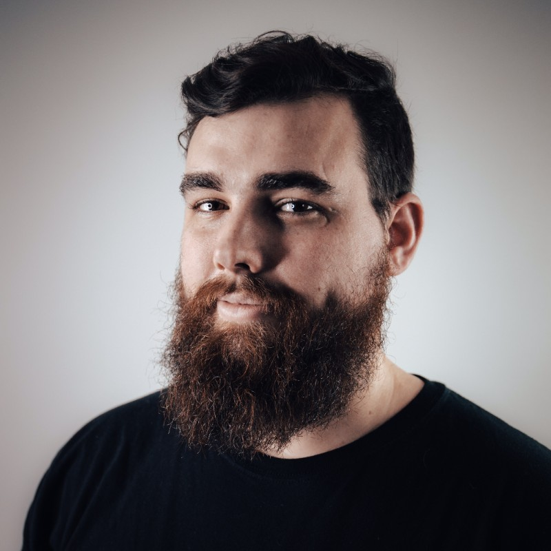

James Negri

Rockaway
jamesnegri94@gmail.com
linkedin.com/in/james-negri
I am a communications designer with an emphasis on process. I am able to learn new technologies quickly and love to expand my toolset. My experience in the US Marine Corps has given me the ability to work under pressure and complete projects on time. I am self-possessed, efficient, meticulous, and show extreme attention to detail. I take pride in my work and will always strive to improve the level of engagement and effectiveness my projects bestow. If I’m not at school or work, I’m either telling my cat to get off the table, drinking tea with my wife, or playing video games.
Experience
Customer Development Representative
Power Home Remodeling
Nov 2022 - Present
Web Designer
ACCL Marketing
Jan 2019 - Nov 2022
- Design and develop varying websites for clients leveraging Squarespace and WordPress for a simplified user experience and design. Responsible for layout, content creation, and consistent branding, in addition to retaining clients for future work with the company
- Design and synthesize graphics for clients' social media using Adobe Illustrator. Successfully achieved results through over 30% higher social media engagement and successful campaigns with compelling content and marketing tactics.
- Collaborate with team to make informed business decisions on futures contracts based on client quality and goals to ensure successful business outcomes.
Combat Engineer
Marine Corps Recruiting
Sep 2012 – Aug 2016
- Led, Managed, and organized various groups of 5+ United States Marines to successfully execute operations critical to national objectives in a timely and efficient manner. Resulted in 4 promotions during 4 years of service.
- Learned and operated various programs and equipment to effectively accomplish the mission resulting in multiple licenses and certifications.
- Organized and created systems to effectively monitor inventory. Promoted to supervisor responsible for tracking $XX in equipment inventory.
Education
Rutgers University - Newark
Bachelor's degree, Graphic Design
2020 – May 2022
Skills
Adobe Illustrator • Graphic Design • Web Design • Project Management • Team Leadership • Typography • Leadership • Management • Veterans • Operational Planning • HTML